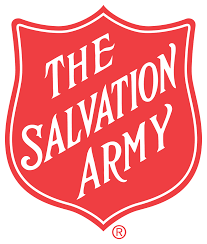
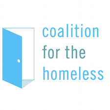
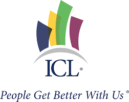
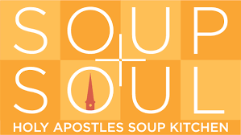
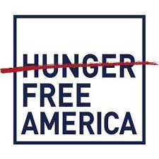

Clothing
The Bowery Mission
Since 1879, The Bowery Mission has served homeless, hungry and poor New Yorkers. Meals, shelter, and medical care lead to residential programs that offer men and women the opportunity to transform their lives. Children get a positive first chance through summer camp, mentoring and family support. A vital part of the Lower East Side, The Bowery Mission now offers new hope to neighborhoods like Harlem and the South Bronx.
To go directly to their donate page, click here.
New York Department of Homless Services

DHS and its partners continue to strengthen our work in the areas of homelessness prevention; street and subway outreach; sheltering individuals and families; and moving clients to housing permanency and supporting their transitions with aftercare services. We do this in furtherance of our system wide collective efforts to reduce homelessness and to improve the lives of all the clients who we serve.
To go directly to their donate page, click here.
The Salvation Army
The Salvation Army, an international movement, is an evangelical part of the universal Christian Church. Its message is based on the Bible. Its ministry is motivated by the love of God. Its mission is to preach the gospel of Jesus Christ and to meet human needs in His name without discrimination.
To go directly to their donate page, click here.
Shelters
Coalition for the Homeless
The Coalition for the Homeless is the nation’s oldest advocacy and direct service organization helping homeless men, women and children. We believe that affordable housing, sufficient food and the chance to work for a living wage are fundamental rights in a civilized society. Since our inception in 1981, the Coalition has worked through litigation, public education and direct services to ensure that these goals are realized.
To go directly to their donate page, click here.
New York Rescue Mission
The New York City Rescue Mission exists to provide help and hope to the hungry, homeless and hurting men and women of New York City.
To go directly to their donate page, click here.
Covenant House
We who recognize God's providence and fidelity to His people are dedicated to living out His covenant among ourselves and those children we serve, with absolute respect and unconditional love. That commitment calls us to serve suffering children of the street, and to protect and safeguard all children. Just as Christ in His humanity is the visible sign of God's presence among His people, so our efforts together in the covenant community are a visible sign that effects the presence of God, working through the Holy Spirit among ourselves and our kids.
To go directly to their donate page, click here.
ICL "People Get Better With Us"
ICL's mission is to assist individuals and families affected by or at risk of mental illness or developmental disabilities with integrated comprehensive care designed to improve their wellbeing, recovery and participation in community living.
To go directly to their donate page, click here.
The Bowery Mission
The Bowery Mission recovery programs start from the perspective that homelessness is both the problem and the symptom of other problems that can range from chronic substance abuse, financial instability, domestic violence, sexual victimization and more.
To go directly to their donate page, click here.
Food
Food Bank New York

[We try to] end hunger by organizing food, information and support for community survival, empowerment, and dignity. Food Bank For New York City has been working to end food poverty in our five boroughs for more than 30 years. As the city’s largest hunger-relief organization, we employ a multifaceted approach centered on helping low-income New Yorkers overcome their circumstances and achieve greater independence.
To go directly to their donate page, click here.
Holy Apostles Soup Kicthen
Holy Apostles Soup Kitchen provides a hot, nutritious, well-balanced meal every weekday, including holidays, from 10:30 a.m. to 12:30 p.m.
To go directly to their donate page, click here.
St.Joe's Soup Kicthen

St. Joseph’s Soup Kitchen has a long and distinguished record of feeding those in need in New York City. Our mission is simple: to feed the hungry and the homeless in a warm and welcoming environment every Saturday afternoon.
To go directly to their donate page, click here.
Hunger Free America
HUNGER FREE AMERICA is a national nonprofit group building a nonpartisan, grassroots membership movement to enact the policies and programs needed to end domestic hunger and ensure that all Americans have sufficient access to nutritious food
To go directly to their donate page, click here.
New York Rescue Mission
The New York City Rescue Mission exists to provide help and hope to the hungry, homeless and hurting men and women of New York City.
To go directly to their donate page, click here.